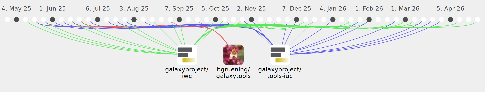

planemo-autoupdate

Commits all-time: 478
Commits last year: 211

(141)
- 64d5da3
- 5942729
- a219039
- f953116
- 81a919e
- ce217b2
- 2492be1
- 5a6450d
- 415ec32
- d548cc6
- 8c6e1db
- baa89e8
- 4d8e581
- 5869178
- 0fecdfa
- 5cb8e38
- 478b9f3
- e1797af
- d0c6444
- c049f9c
- 004b09a
- 628a44c
- 7a9464f
- 4c10707
- ebfd5b2
- 2d510ce
- 7b6392e
- c45cc3f
- 918dc93
- 1e4b6ab
- e577f99
- c4a8693
- c0458c4
- 579a921
- 6b3a82d
- acc0afc
- 7bcfe9a
- 49dc932
- 424d7e4
- e878308
- 7ba182e
- 0b9b79b
- 5be7d1d
- 642bad9
- cc7bfc4
- e8ec0af
- 57477f5
- e52cf70
- 3fdd51c
- 1e96b59
- cd4edbc
- b2b0e17
- d788f4e
- 70ffbd6
- 8c180c9
- 1d31e5e
- 14980f9
- dc0b50b
- 57489da
- a2d6f46
- 16144f7
- 62bce28
- 5c9f1b7
- e97c95c
- 7851874
- 17a8cf1
- 69b7c85
- d5ce1ba
- e6b7e61
- 1493f32
- 74dd935
- 806f99b
- b181457
- e6a64e3
- 201e378
- 78c8880
- 2dd283e
- de96989
- ffd3597
- eb9b071
- 45992fb
- 6d39988
- 89502fc
- 610c8d7
- b6c29ef
- 8e24776
- a6a6718
- a15d32c
- a23d478
- 60da9fb
- a914d96
- b5536b1
- 10d4b25
- fe9d314
- 87a7833
- 6c30ccb
- dad1a0e
- f777b2d
- a5f2640
- 964dc89
- b1142c0
- 79dabb3
- d04acd9
- c6f5fa5
- df9a79f
- b752bfb
- 237f913
- f09d921
- c7b4786
- 389e47a
- 6aed9ef
- 6e2fa8e
- f490bba
- db5914e
- e433f38
- afb7ff0
- 566226f
- 2fb0ad3
- f9bc0c4
- 8c0a963
- 6651003
- b21fee6
- a284298
- 7fe64b8
- e38bc39
- c0b60b2
- 23c8beb
- 783e8a8
- 85811af
- 1148104
- 70ae748
- 597b171
- 010433b
- 452aa3d
- b9eae53
- 04cdc02
- 27e529b
- c1b9f8c
- 6d87621
- c7a091a
- 7ecd1e5
(65)
- ed2db9a
- 363fa93
- f7af6d3
- 99c10c3
- 3e7bf5a
- 16f1bd9
- 7dd985c
- f5a9be9
- 3234c3d
- 720759c
- ad4d739
- 3ae2bd7
- 5c169b6
- 60ab8b8
- a456bd3
- ee59db3
- 7127d7a
- 3882daf
- d69c709
- 7bbdea2
- 59fb7d2
- 2450491
- 20bb457
- 5b2d50a
- f021b8f
- 825bd56
- adc1bb6
- b9c1c21
- 038b618
- a78403a
- 005d966
- f44cbea
- 9a73eec
- b81656a
- 5d27d1d
- 6a587a7
- 3da3abe
- 51c287e
- 9c0356d
- bf77979
- 4cbd719
- aece763
- 660168c
- d98886a
- 325c1cc
- fad2bd4
- ae553dd
- aa533f1
- ab9c8c1
- 1495eb0
- 908a0f4
- 52069a3
- 4631fe2
- 2f6da80
- 3a96340
- aa17233
- 0372b07
- babee6b
- 112bffa
- ac40816
- 4d6cd40
- 8aeea4d
- 300d90e
- 6e2a9e2
- 4e83d01
(5)